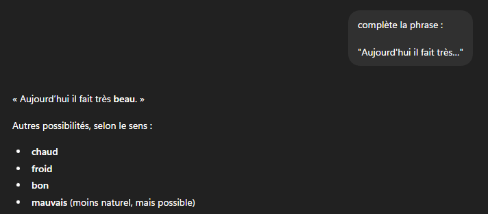
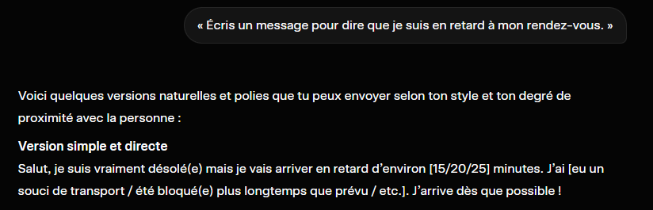
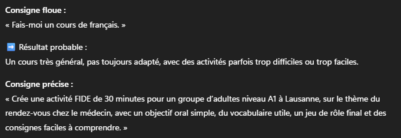

1
Elle prédit la suite la plus probable
Exemple de l'image: « Aujourd'hui il fait très... ». L'IA propose une suite naturelle comme « beau » car c'est fréquent dans la langue. Elle choisit le probable, pas le "vrai" universel.

2
Elle calcule, elle ne raisonne pas comme un humain
Exemple de l'image: la demande « je suis en retard » produit un message poli et crédible. C'est fluide, mais il faut encore vérifier le ton, la précision et l'adéquation au contexte réel.

3
Elle dépend fortement de votre consigne
Exemple de l'image: « Fais-moi un cours de français » donne un résultat large. Une consigne FIDE précise (niveau, durée, lieu, objectif oral) donne une production directement exploitable.

Ce que l'IA fait ou ne fait pas
OUI Propose rapidement des formulations et des variantes
OUI Reformule pour un niveau de langue ciblé
OUI Génère des supports structurés (liste, dialogue, fiche)
OUI Aide à gagner du temps de préparation
NON Ne connaît pas vos apprenants ni votre réalité de classe
NON Ne vérifie pas automatiquement les faits
NON Ne garantit pas la pertinence pédagogique
NON Ne remplace pas votre expertise de formateur
Analogie
L'IA, c'est comme un GPS du langage: elle propose un itinéraire rapide, mais c'est vous qui choisissez la bonne route selon le terrain, les contraintes et la destination pédagogique.
À retenir
- L'IA est un assistant de production, pas une source infaillible
- Consigne claire = réponse plus utile
- Toujours vérifier, adapter et contextualiser avant la classe
3 règles d'usage responsable
Confidentialité : ne jamais saisir de données personnelles d'apprenants dans une IA publique.
Biais : vérifier les représentations culturelles et de genre dans les résultats.
Toujours relire : l'IA produit des erreurs avec assurance — valider avant toute utilisation en classe.